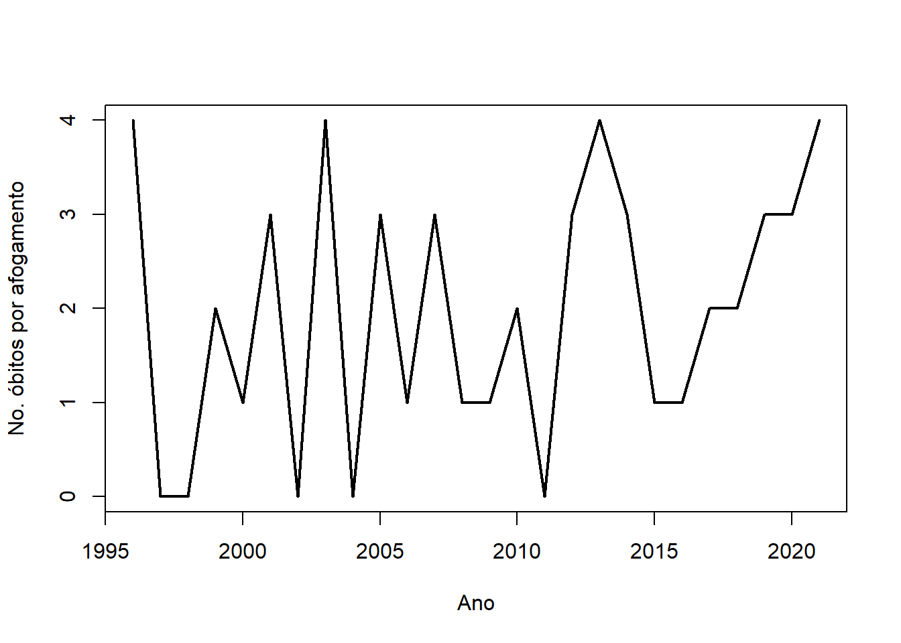

url <- 'https://docs.google.com/spreadsheets/d/13MdzvZB5U85MkLy97ZRytkylikJu7rJoC1WL0XjKw-c/edit?usp=sharing'
require(gsheet)Carregando pacotes exigidos: gsheetdados <-gsheet2tbl(url)
afogamentos <- ts( dados[,2], start = 1996)Uma coleção do tipo \(\{x(t),t\in\mathcal{T}\}\), \(\mathcal{T}\subseteq \mathbb{R}\), onde \(x(t)\) é uma variável aleatória para cada \(t\) fixado e \(\mathcal{T}\) é um conjunto de índices é denominada processo estocástico. Como já definido no capítulo anterior, séries temporais são casos particulares de processos estocásticos.
Um processo estocástico é dito ser fortemente estacionário se sua distribuição é invariante ao índice. Portanto, para qualquer \(t_1,\ldots,t_k\), a distribuição de \(x(t_1),\ldots,x(t_k)\) é a mesma de \(x(t_1+h),\ldots,x(t_k+h)\).
Example 2.1 Se \(x(t)\sim \hbox{Normal}(0,1)\) e \(x(t)\) é independente de \(x(s)\) para todo \(t\neq s\), então, para qualquer \(t_1,\ldots,t_k\),
\[\begin{align}P(x(t_1)<x_1,\ldots,x(t_k)<x_k)&=\prod_{i=1}^k P(x(t_i)<x_i)=\prod_{i=1}^k P(x(t_i+h)<x_i)\\&=P(x(t_1+h)<x_1,\ldots,x(t_k+h)<x_k)\end{align}\] logo, \(\{x(t),t\in \mathbb{R}\}\) é um processo fortemente estacionário. \(\blacksquare\)
Theorem 2.1 Seja \(\{x(t),t\in\mathbb{N}\}\) um processo estocástico com \[x_t= x_{t-1}+\varepsilon_t,\;\;\varepsilon_t\sim\hbox{Normal}(0,1),\] para \(t=1,2,\ldots\) com a condição de que \(x_0\sim\hbox{Normal}(0,1)\) e que \(Cov(\varepsilon_t,\varepsilon_s)=0\;\;\forall s\neq t\). Então, \[x_t=x_{t-1}+\varepsilon_{t}=\cdots=x_0+\sum_{j=1}^t\varepsilon_t\sim\hbox{Normal}(0,t+1).\] Como \(x_t\sim\hbox{Normal}(0,t+1)\) e, para qualquer \(h>0\), \(x_{t+h}\sim\hbox{Normal}(0,t+h+1)\) temos que este processo não é fortemente estacionário. \(\blacksquare\)
Definition 2.1 Um processo estocástico \(\{y_t\}\) é dito ser fracamente estacionário (ou de segunda ordem) se \[\begin{align*} E(y_t)&=\mu,\\ Var(y_t)&=\nu,\\ \gamma(t-s)&=Cov(y_t,y_s)& \end{align*}\] onde \(\mu\) e \(\nu\) são constantes independentes de \(t\) e a covariância de \(x_t\) e \(x_s\) depende de \(t\) e \(s\) somente através da diferença \(t-s\). \(\blacksquare\)
Example 2.2 Considere o processo estocástico \(\{x(t),t\in\mathbb{N}\}\), onde \[x(t) = \varepsilon(t) +\frac{1}{2}\varepsilon(t-1) \] onde \(\varepsilon(t)\sim\hbox{Normal}(0,\nu)\) para \(t=1,\ldots\), \(\varepsilon(t)\) é independente de \(\varepsilon(s)\) para todo \(s\neq t\) e \(\varepsilon(0)=0\). Então: \[\begin{align} E(x(t))&=E(\varepsilon(t))+\frac{1}{2}E(\varepsilon(t-1))=0\\ Var(x(t))&=Var(\varepsilon(t))+\frac{1}{4}Var(\varepsilon(t-1))=\frac{5}{4}\nu \end{align} \] e \[\begin{align} Cov(x(t),x(t+h))&=Cov\left(\varepsilon(t)+\frac{1}{2}\varepsilon(t-1),\varepsilon(t+h)+\frac{1}{2}\varepsilon(t+h-1)\right)\\ &=Cov\left(\varepsilon(t),\varepsilon(t+h)\right)+\frac{1}{2}Cov\left(\varepsilon(t),\varepsilon(t+h-1)\right)\\ &+\frac{1}{2}Cov\left(\varepsilon(t-1),\varepsilon(t+h)\right)+\frac{1}{4}Cov\left(\varepsilon(t-1),\varepsilon(t+h-1)\right)\\ &=\left\{ \begin{array}{ll} \frac{5}{4}\nu,&\; h = 0 \\ \frac{1}{2}\nu,&\; |h|=1,\\ 0,&\;\hbox{caso contrário.} \end{array} \right. \end{align}\] Portanto, o processo é fracamente estacionáriao. \(\blacksquare\)
:::
Definition 2.2 Uma série temporal é dita ser estacionária se ela é fracamente estacionária. Nesse caso, a covariância entre \(x_t\) e \(x_s\) depende exclusivamente de \(h=|t-s|\). A função \[\gamma(h)=Cov(x_{t},x_{t-h})\] é denominada função de autocovariância.
Seja \(x_1,x_2,\ldots,x_n\) uma série temporal estacionária. Então, a média \(\mu\) pode ser estimada por \(\bar{x}_n\), uma vez que \(E(\bar{x}_n)=\mu\). A variância dessa estatística é
\[\begin{align}Var(\bar{x}_n)&=Cov(\bar{x}_n,\bar{x}_n)=Cov\left(\sum_{i=1}^n \frac{x_i}{n},\sum_{j=1}^n\frac{x_j}{n}\right)=\frac{1}{n^2}\sum_{i=1}^n\sum_{j=1}^nCov(x_i,x_j)\\ &=\frac{1}{n^2}\left[\sum_{i=1}^nCov(x_i,x_i)+2\sum_{i=1}^n\sum_{j\neq i}Cov(x_i,x_j)\right]\\ &=\frac{1}{n^2}\left[n\nu+2\sum_{h=1}^{n-1}(n-h)\gamma(h)\right]=\frac{\nu}{n}+\frac{2}{n}\sum_{h=1}^{n-1}\left(1-\frac{h}{n}\right)\gamma(h) \end{align}\]
Note que, diferente do caso independente e identicamente distribuído, \(\bar{x}\) não é necessariamente um estimador adequado, conforme pode ser constatado no exemplo abaixo.
Example 2.3 Seja \(x_t\) um processo onde \(x_0\sim\hbox{Normal}(0,\nu)\) e \(x_t=x_0\) para todo \(t>0\). Como
\[\begin{align} E(x_t)&=E(E(x_t|x_0))=E(x_0)=0\\ Var(x_t)&=E(Var(x_t|x_0))+Var(E(x_t|x_0))=E(0)+Var(x_0)=\nu\\ Cov(x_t,x_{t-h})&=E( Cov(x_t,x_{t-h}|x_0))+Cov( E(x_t|x_0),E(x_{t-h}|x_0))\\ &=E(0)+Cov(x_0,x_0)=Var(x_0)=\nu \end{align}\] e, portanto, o processo é fracamente estacionário. Contudo, \[Var(\bar{x})=\frac{\nu}{n}+\frac{2}{n}\sum_{h=1}^{n-1}\left(1-\frac{h}{n}\right)\nu=\nu,\] portanto, o erro padrão não decai com o aumento do tamanho da amostra.
\(\blacksquare\)
A partir do exemplo acima, fica claro que \(\bar{x}\) nem sempre será um estimador adequado para uma série estacionária.
Definition 2.3 Uma série temporal estacionária é dita ser ergódica para a média se \[\sum_{i=1}^n\frac{x_i}{n}\stackrel{p}{\rightarrow} \mu,\] quando \(n\rightarrow\infty\).
A partir deste momento será considerado que toda série temporal estacionária é ergódica e, portanto \(\bar{x}\) é um estimador para \(\mu\).
Example 2.4 Considere novamente o processo no (estationario_nao_ergodico?). Como \(\bar{x}_n=x_0\), tem-se que, para \(\varepsilon>0\) arbitrário, \(\bar{x}\sim\hbox{Normal}(0,\nu)\) e \[P(|\bar{x}_n-0|>\varepsilon)=2P(x_0>\varepsilon)=2\int_{-\infty}^\varepsilon \frac{1}{\sqrt{2\pi\nu}}e^{-\frac{y^2}{2\nu}}dy>\frac{1}{2}\] logo, \(\bar{x}\) não converge em probabilidade para \(0\) e, portanto, o processo não é ergódico na média. \(\blacksquare\)
Definition 2.4 A série estacionária \(x_t\) é dita ser um ruído branco se \(E(x_t)=0\), \(Var(x_t)=\nu\) e \[\begin{equation} Cov(x_t,x_s)=0, \end{equation}\] para todo \(t\neq s\). \(\blacksquare\)
É imediato que o ruído branco é uma série temporal estacionária. Além disso, pela Desigualdade de Chebyshev, para qualquer \(\varepsilon>0\),
\[P\left(|\bar{x}_n|\geq\varepsilon\right)\leq \frac{E(\bar{x}_n^2)}{\varepsilon^2}=\frac{Var(\bar{x}_n)}{\varepsilon^2}=\frac{\nu}{n\varepsilon^2}\] logo \(\lim_{n}P(|\bar{x}_n|\leq \varepsilon)=0\) e \(\bar{x}_n\stackrel{p}{\rightarrow}0\). Portanto, o ruído branco é ergódico.
Considere agora a série temporal \(y_t=\mu+x_t\), onde \(x_t\) é um ruído branco. Então \[\bar{y}_n=\mu+\bar{x}_n\stackrel{p}{\rightarrow}\mu\] e \(\bar{y}_n\) é um estimador para \(\mu\).
Em certos momentos, será considerado que \(x_t\) e \(x_s\), para todo \(t\neq s\) são independentes (essa é uma condição mais forte, pois implica em \(Cov(x_t,x_s)=0\)). Esse processo é denominado ruído branco independente.
Por último, também será considerado a possibilidade de que \(x_t\sim\hbox{Normal}(0,\nu)\), com \(x_t\) e \(x_s\) indepentens para todo \(t\neq s\). Esse processo será denominado é denominado ruído branco gaussiano.
Sejam \(\ldots,\varepsilon_{-2},\varepsilon_{-1},\varepsilon_{0},\varepsilon_{1},\ldots\) ruídos brancos. O modelo de série temporal de média móvel de ordem \(q\), denotado por MA\((q)\) é definido como
\[x_t=\varepsilon_{t}+\sum_{j=1}^q \theta_j\varepsilon_{t-j}.\] Vamos demonstrar que esse processo é estacionário. Primeiro, observe que
\[E(x_t)=E(\varepsilon_t)+\sum_{j=1}^q\theta_jE(\varepsilon_{t-j})=0.\]
Defina \(\theta_0=1\). Então \[x_t=\sum_{j=0}^q \theta_j\varepsilon_{t-j},\] e \[Var(x_t)=\sum_{j=0}^q\sum_{k=0}^qCov(\theta_j\varepsilon_{t-j},\theta_k\varepsilon_{t-k})=\nu\sum_{j=0}^q\theta_j^2+\underbrace{\sum_{j=0}^q\sum_{j\neq k}\theta_j\theta_k\gamma(|j-k|)}_{0}=\nu\sum_{j=0}^q\theta_j^2.\] Por último, para \(t\neq s\),
\[Cov(x_t,x_s)=\sum_{j=0}^q\sum_{k=0}^qCov(\theta_j\varepsilon_{t-j},\theta_k\varepsilon_{s-k})=\sum_{j=0}^q\sum_{k=0}^q\theta_j\theta_k\gamma(|t-s-(j-k)|)\] Como \((j-k)\in\{-q,\ldots,q\}\), haverá autocovariância sempre que \(|t-s|\leq q\), o que implica que a \(Cov(x_t,x_s)\) é função de \(|t-s|\), o que conclui a demonstração.
Example 2.5 O modelo MA(1) é dado por \[x_t=\varepsilon_t+\theta\varepsilon_{t-1}\] Sua função de autocovariância é \[\gamma(h)=\left\{\begin{array}{ll}\nu(1+\theta^2),&h=0\\ \nu\theta,&h=\pm1,\\0,&\hbox{caso contrário}\end{array}\right.\]
Considere uma série temporal estacionária e ergódica, com média \(\mu\). Então sua função de autocovariância é dada por
\[\gamma(h)=E((x_{t+h}-\mu)(x_t-\mu))\] A função de autocorrelação é definida por \[\rho(h)=\frac{Cov(x_{t+h},x_t)}{\sqrt{Var(x_{t+h})Var(x_t)}}=\frac{\gamma(h)}{\gamma(0)}.\]
Example 2.6 Seja \(x_t=\varepsilon_t\), onde \(\varepsilon_t\) é um ruído branco. Então \[\gamma(h)=\left\{\begin{array}{ll}\nu,&h=0,\\0,&\hbox{caso contrário}\end{array}\right.\] e \[\rho(h)=\left\{\begin{array}{ll}1,&h=0,\\0,&\hbox{caso contrário}\end{array}\right.\]
Example 2.7 Considere o modelo MA(1). Como \[\gamma(h)=\left\{\begin{array}{ll}\nu(1+\theta^2),&h=0\\ \nu\theta,&h=\pm1,\\0,&\hbox{caso contrário}\end{array}\right.\]e teremos \[\rho(h)=\left\{\begin{array}{ll}1,&h=0\\ \frac{\theta}{1+\theta^2},&h=\pm1,\\0,&\hbox{caso contrário}\end{array}\right.\]
Para uma série observada de tamanho \(n\), pode-se estimar \(\gamma(h)\) pelo método da substituição:
\[\begin{align} \widehat{\gamma(h)}&=\frac{1}{n}\sum_{i=1}^{n-h}\left(x_{i+h} - \bar{x}\right)\left(x_{i} - \bar{x}\right) \end{align}\]
e \(\rho\) por
\[\begin{equation}
\hat{\rho}(h)=\frac{\hat{\gamma}(h)}{\hat{\gamma}(0)}
\end{equation}\]
O correlograma é um gráfico cartesiano construído a partir dos pontos \((h, \hat{\rho}(h))\). A partir de cada ponto é desenhada uma linha, semelhante a um gráfico de barras. Ao se observer um ruído branco, espera-se que o correlograma apresente valores pequenos para todo \(h>0\), enquanto que para um modelo MA(\(q\)), os pontos \((1, \hat{\rho}(1)),\ldots,(q, \hat{\rho}(q))\) devem ser expressivamente diferentes de zero.
Como \(\hat{\rho}(0)=1\), a implementação desta função em softwares estatísticos pode variar. Por exemplo, a função acf do pacote stats começa na defasagem 0, apresentando portanto uma linha no ponto (0,\(\hat{\rho}(0)\))=(0,1). Já a função Acf do pacote forecast (ou ainda a acf do pacote TSA) começam na defasagem \(h=1\).
Example 2.8 A série abaixo representa o número anual de óbitos por afogamento na cidade de Manaus, entre 1996 e 2021. Os dados foram obtidos do Ministério da Saúde (http://tabnet.datasus.gov.br/), considerando o código internacional de doenças (CID10) W70 - Afogamento e submersão conseqüentes a queda dentro de águas naturais.
url <- 'https://docs.google.com/spreadsheets/d/13MdzvZB5U85MkLy97ZRytkylikJu7rJoC1WL0XjKw-c/edit?usp=sharing'
require(gsheet)Carregando pacotes exigidos: gsheetdados <-gsheet2tbl(url)
afogamentos <- ts( dados[,2], start = 1996)ts.plot(afogamentos, lwd = 2, main = '', xlab = 'Ano', ylab = 'No. óbitos por afogamento')
A figura abaixo mostra o correlograma dessa série. Observe que as autocorrelações amostrais observadas são baixas. Esse tipo de comportamento é esperado em um ruído branco. Como a série não oscila em torno de zero, um modelo razoável seria \[y_t=\mu+\varepsilon_t,\] onde \(\varepsilon_t\) é um ruído branco. Nesse caso, \(\bar{y}_n=1,88\) é uma estimativa para \(\mu\).
acf(afogamentos, lwd = 2, main = '', xlab = 'Defasagem', ylab = 'Autocorrelação')\(\blacksquare\)
Sem perda de generalidade, assuma que \(x_t\) é um processo estacionário com \(\mu=0\). Para uma defasagem \(h>0\), considere a hipótese \(H_0:\rho(h)=0\). Sob \(H_0\), o processo estacionário é um ruído branco e a distribuição da função de autocorrelação amostral é \(N(0,1/n)\). Portanto, uma região de rejeição ao nível de 5% de significância para um teste baseado nessa distribuição é
\[R={\hat{\rho}(h): \hat{\rho}(h)|>\frac{2}{\sqrt{n}},\] Este é o valor da linha pontilhada que aparece no correlograma na Figure 2.1.
Na seção anterior mostrou-se como testar se \(\rho(h)=0\), para um \(h\) fixado. Como várias autocorrelações para diferentes defasagens são avaliadas simultaneamente, o correto seria testar \(H_0: \rho(h)=0\;\;\forall h=1,\ldots,q\), onde \(q\) é o valor máximo da defasagem a ser testado. Considerando a região de rejeição dada anteriormente, pela desigualdade de Bonferroni,
\[\begin{align}P(\hbox{Rejeitar }H_0|H_0\hbox{ é verdadeira})&=P\left(\cup_{h=1}^q\left\{ \hat{\rho}(h)>\frac{2}{\sqrt{n}}\right\}| H_0\hbox{ é verdade}\right)\\ &\leq \sum_{h=1}^qP\left( \hat{\rho}(h)>\frac{2}{\sqrt{n}}| H_0\hbox{ é verdade}\right)\\ &<q\alpha\end{align}\]
Portanto, a probabilidade de cometer o erro tipo 1 pode aumentar na medida em que testamos mais de uma defasagem.
Contudo, se todas as autocorrelações, de defasagens 1 até \(q\), são baixas, não há evidências contra \(H_0\). Com esse espírito o teste de Ljung-Box (1978) utiliza a estatística \[Q_{LB}=n(n+2)\sum_{h=1}^q \frac{\hat{\rho}(h)^2}{n-h}\] e rejeita \(H_0\) se \(Q_{LB}>\chi^2_{1-\alpha,q}\), onde \(\chi^2_{\lambda,n}\) é o quantil \(\lambda\) da distribuição \(\chi^2_n\).
O teste de Box-Pierce (1970) possui o mesmo objetivo e tem a mesma regra de decisão, mudando apenas a estatística de teste para
\[Q_{BP}=n\sum_{h=1}^q \frac{\hat{\rho}(h)^2}{n-h}.\]
Example 2.9 Para a série de óbitos anuais por afogamentos em Manaus, tem-se que os teste Ljung-Box e Box-Pierce não rejeitam a hipótese de ruído branco.
Box.test(afogamentos, type = 'Ljung-Box')
Box-Ljung test
data: afogamentos
X-squared = 1.2623, df = 1, p-value = 0.2612Box.test(afogamentos, type = 'Box-Pierce')
Box-Pierce test
data: afogamentos
X-squared = 1.127, df = 1, p-value = 0.2884\(\blacksquare\)